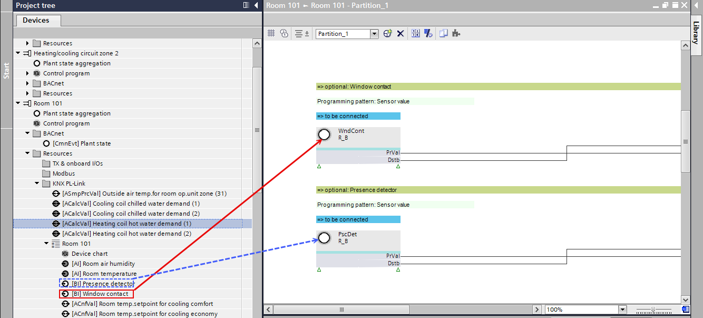

使用窗口 /presence 检测器触点调整 RDG2 设备图表
- The window contact or/and presence detector are configured in the RDG2 device.
Configuring a RDG2 window contact or/and presence detector
- In ABT Site, select a room.
- Right-click and select Show in program.
- Select a room, for example, [Room 101] > Resources > KNX PL-Link > [Room 101] > Device chart.
- The control program of the device chart opens.
- Drag the Window contact to the WndCont xFB.
- Drag the Presence detector to the PscDet xFB.

- The windows contact and presence detector are assigned and after downloading the control program visible on the RDG2 display.